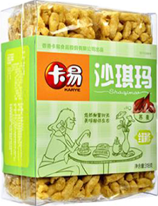
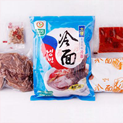

溯源档案：
-
1.消费者一码/一键溯源
消费者使用手机扫描产品包装上的二维码，或者登陆 717商城点击溯源查询即可快速查看丰富详尽的农产 品档案。
-
2.生产者品牌展示
通过溯源系统的管理平台，生产者自行维护产品以及 企业基本信息，生产环境、生产过程、实时视频信息 等，建立完善丰富的农产品档案。
-
3.监管者全程追溯
监管部门或其他监管者可通过溯源系统对进驻717商 城溯源平台的相关农产品以及生产者进行种植过程的 全程监督，可以追根溯源，在一
卡易 荞麦沙琪玛 溯源档案

卡易 荞麦沙琪玛
-
品种
饼干糕点
-
上市时间
2017/02/28
- 产品名称:卡易荞麦沙琪玛
- 产品规格:380g/袋
- 条形码:1234567890987
- 保质期:12个月
- 产品价格：108.00
- 产地:内蒙古和林格尔经济 开发区
- 安全品质:良好
- 所属商家:凯盛旗舰店
-
内蒙古阳光满分健康食品有限公司
营业执照已验证查看
- 王凯
- 内蒙古和林格尔经济开发区
地图
素原档案
档案完整度
- 原料
- 原料
- 原料
- 原料
产品认证
绿色食品认证
已检测
卡易荞麦沙琪玛是一种休闲辅食，可以 当做早餐，健康又美味。
公司简介
内蒙古阳光满分健康食品有限公司，旨在利用 先进的物联网、移动互联网等技术改造、创新传统 食品行业，保证食品健康安全
购买信息
- 网店购买
- 实体店购买
- 销售联络方式
- 厂家资质
- 物流跟踪
- 其他溯源信息
该商家的其他产品
- 
-
升元冷面 荞麦冷 面黑龙江特产...
-
升元冷面 荞麦冷 面黑龙江特产...
-
升元冷面 荞麦冷 面黑龙江特产...
到底了哦！